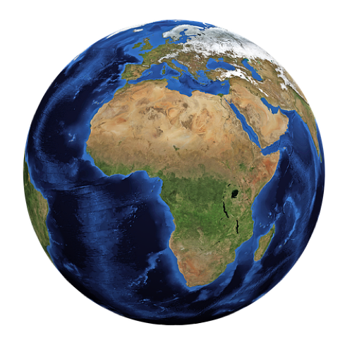

The radius of the Earth is approximately 4,000 miles.
The diameter of Earth is approximately 8,000 miles.
The Circumference of the Earth is approximately 25,132 miles.
A Radius =
the distance from the center of the tire to the outer edge.
A Diameter =
the distance across the tire measured from one side to the opposite side, by measuring through the center of the tire where the hubcap would be.
A Circumference =
the measurement around the tire. This is best accomplished using a tape measure because it can be wrapped around the outside portion of the tire referred to as the tread (the part of the tire that touches the road) to make the measurement.
The Singapore Flyer is the second largest Ferris Wheel in the world.
Radius = 270.5 feet
Diameter = 541 feet
Circumference = 1700 feet
The world's largest Ferris Wheel,
The High Roller,
is in Las Vegas, Nevada.
It has a height of 550 feet.
Radius = 275 feet
Diameter = 550 feet
Circumference = 1728 feet

The second image is a Coca-Cola can in China, which is pretty cool to see.